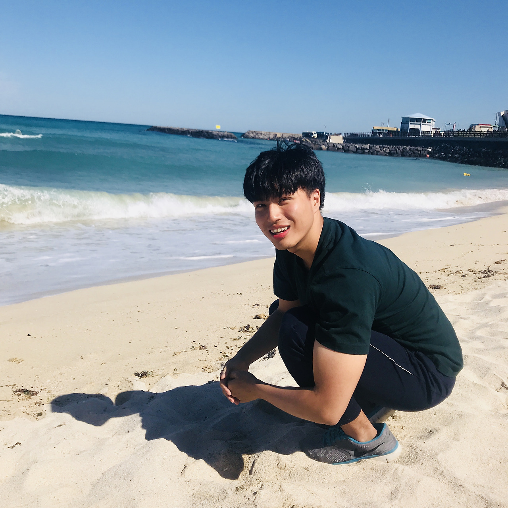

I'm a first-year PhD student in Computer Science at Michigan State University, advised by Prof. Zijun Cui. I received my M.S. in Bioengineering from Seoul National University in Feb. 2023, where I worked with Prof. Jiook Cha.
My research interests lie at the intersection of computer vision, generative AI, and physics-informed learning. I am interested in embedding physical laws into deep generative and vision models for interpretable and physically coherent 3D motion representations. I have also collaborated with Prof. Shinjae Yoo and Prof. Yuewei Lin at Brookhaven National Laboratory.
Education
-
Ph.D. in Computer Science, Michigan State University2025 – Present
-
M.S. in Bioengineering, Seoul National University2021 – 2023
-
B.S. in Electronic & Electrical Engineering, Sungkyunkwan University2015 – 2021
Research Interests
- 3D Human Motion & Vision
- Physics-informed Deep Learning
Past Research
- Computer Vision / Generative Models: ICIP'26 (Music) AAAI'24 (Image)
- Multimodal Learning: ACM MM CogMAEC'25 (Brain)
News
- May 2026: Paper Our paper, Stylus, is accepted at IEEE ICIP 2026.
- Apr 2026: Service Invited as a reviewer for CVPR, ICIP, and NeurIPS.
- Aug 2025: Paper Our paper, Revisiting Your Memory, is accepted as an Oral at ACM Multimedia 2025 — CogMAEC Workshop.
- Aug 2025: Started my Ph.D. at MSU CS.
Selected Publications
- [AAAI'24] AesFA: An Aesthetic Feature-Aware Arbitrary Neural Style Transfer. Acc. 23.75% [project] [paper]
- [ACM MM CogMAEC'25] Revisiting Your Memory: Reconstruction of Affect-Contextualized Memory via EEG-guided Audiovisual Generation. Oral [paper]
- [ICIP'26] Repurposing Image Diffusion Models for Training-Free Music Style Transfer on Mel-Spectrograms. [paper]
- [arXiv'24] Macro2Micro: Cross-modal Magnetic Resonance Imaging Synthesis Leveraging Multi-scale Brain Structures. [paper]
Manuscripts in Preparation
- Compositional Brain Decoding from Symbolic Representations in the Hierarchical Visual System.
- A Viscosity-guided Artistic Style Optimization via Brushstroke Parameterization.